Programs
Mandated Programs
Every Omega chapter carries out twelve programmes set by the fraternity. This is what each one is and how Lambda Xi does it on the Peninsula. Two have their own pages: the essay contest under Achievement Week, and the Scholarships.
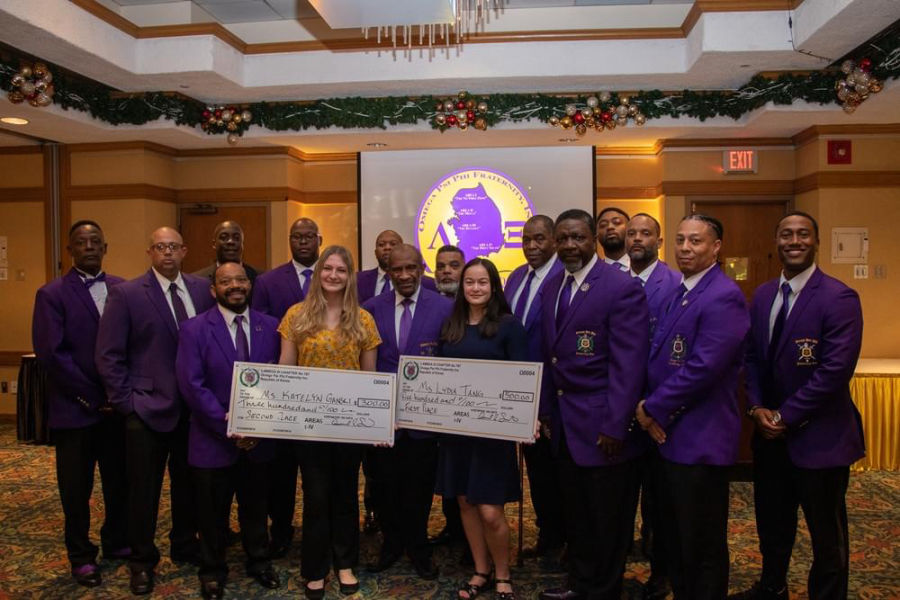
Achievement Week
Originally designed to promote the study of Negro life and history. Achievement Week is observed in November of each year and is designed to seek out and give due recognition to those individuals at the local and international levels who have made a noteworthy contribution toward improving the quality of life for black Americans. A High School Essay Contest is held in conjunction with Achievement Week.
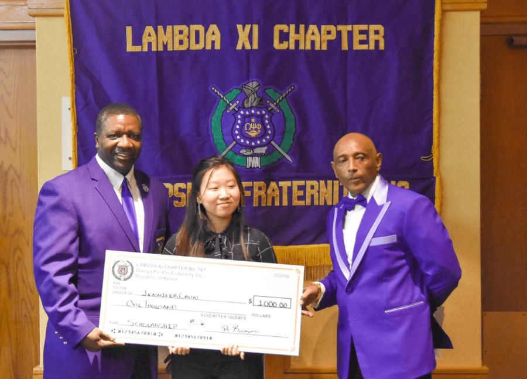
College Endowment Fund
Each year the fraternity gives at least $50,000 to Historically Black College Institutions (HBCU) in furtherance of Omega's commitment to provide philanthropic support. Chapters are assessed donations based on chapter size.
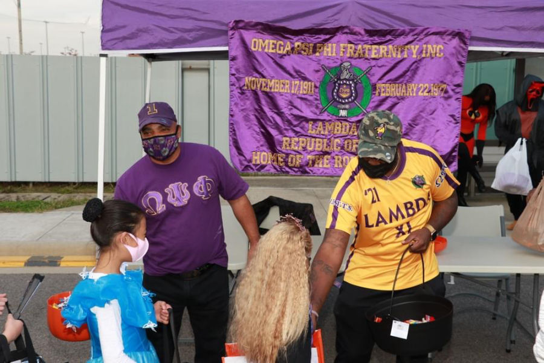
Fatherhood and Mentoring
Every level of the Fraternity, particularly at the chapter level, is asked to play an active role in support of the partnership by actively engaging in the promotion of the Fraternity's Fatherhood Mentoring initiative.
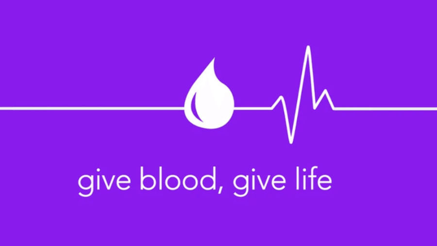
Health Initiatives
All levels of the fraternity are expected to facilitate, participate and/or coordinate activities that will uplift their communities by promoting good health practices. Some of the programs are the Charles Drew Blood Drive and partnership with the American Diabetes Association.
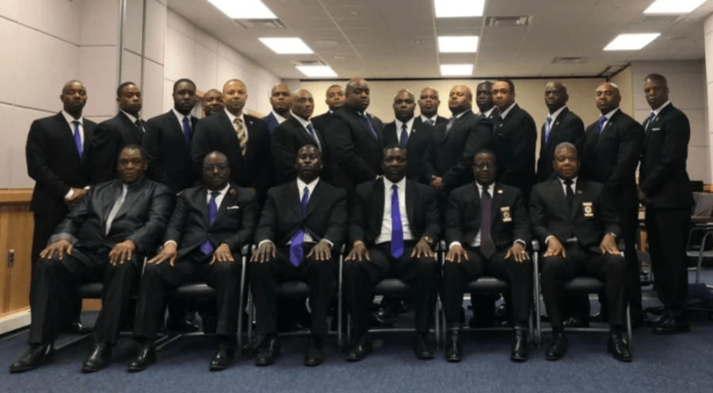
Memorial Service
March 12th of each year has been established as Memorial Day. Chapters are expected to conduct an appropriate service to recall the memory of those members who have entered into Omega Chapter.
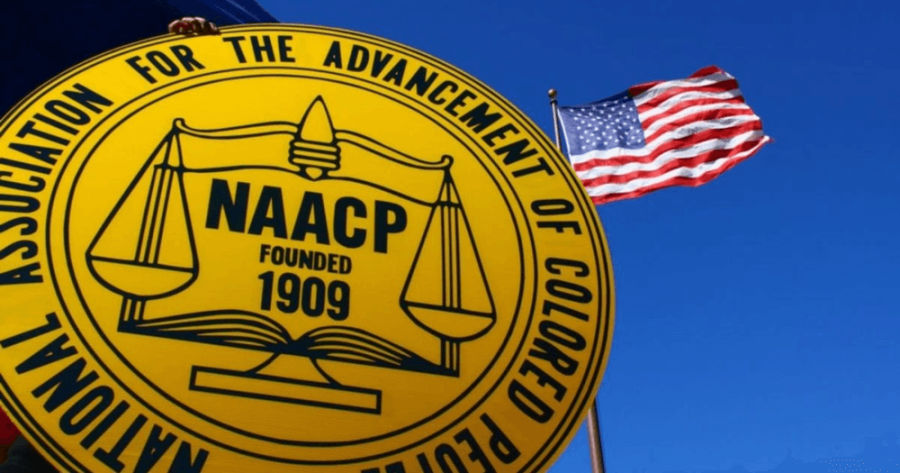
NAACP
Every district and chapter of the fraternity is required to maintain a Life Membership at Large in the NAACP. In the event that a chapter or district is not a life member of the NAACP, it must maintain a yearly membership to be in good standing with the fraternity.
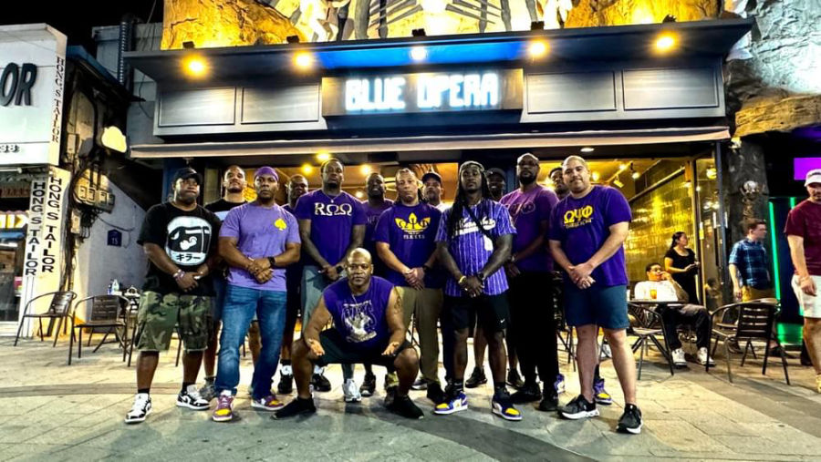
Reclamation and Retention
A concerted effort at the international, district and local levels to retain active brothers and return inactive brothers to full participatory status so that they may enjoy the full benefits of Omega.
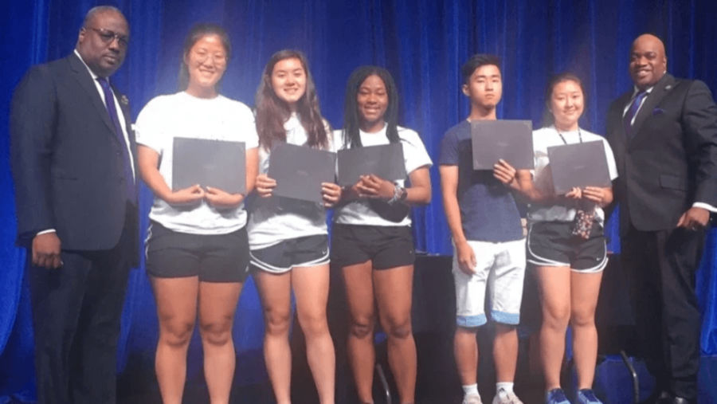
Scholarship
Promotes academic excellence among the undergraduate members. Graduate chapters are expected to provide financial assistance to student members and non-members.
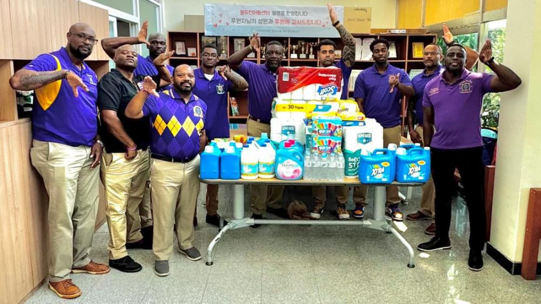
Social Action
Chapters participate in activities that will uplift their communities. Some of the activities include: voter registration, Assault on Illiteracy; Habitat for Humanity; mentoring; and participation in fundraisers for charitable organizations.
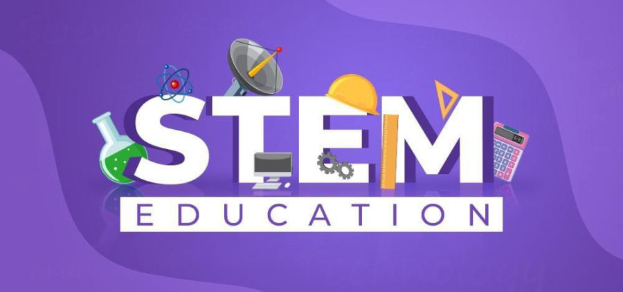
STEM
The Fraternity's STEM initiatives are designed to get students across the world excited about science, technology, engineering, and mathematics (STEM).
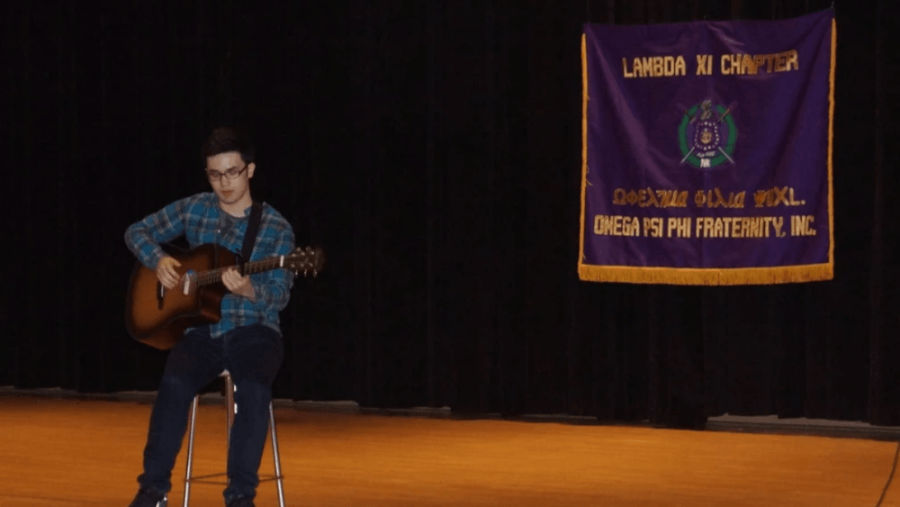
Talent Hunt
This program provides exposure, encouragement and financial assistance to talented young people participating in the Performing Arts. Winners of the competition are awarded recognition and may be given college scholarships for their talents.
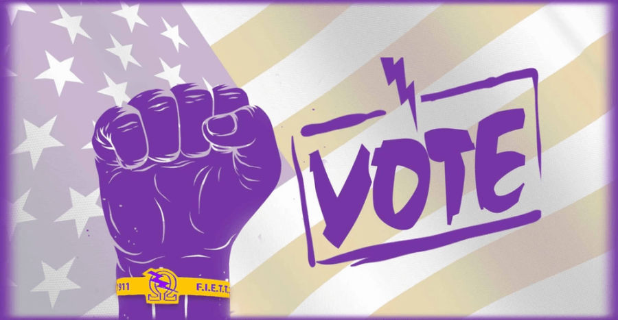
Voter Registration, Education and Mobilization
Chapters are expected to facilitate, participate and/or coordinate activities that will uplift their communities through voting.
Programme descriptions and photographs are from the Mandated Programs page on lambdaxi1911.com as captured on 23 September 2026. Four images (blood drive, NAACP, STEM, voting) are stock graphics and are marked decorative; the rest are the chapter's own photographs. Five rows link to the chapter's own pages (Achievement Week, the Youth Leadership Conference, the All Star Game, Scholarships and the 2025 Talent Hunt album); the live page has no such links. One typo in the live NAACP text ("could standing") is corrected to "good standing".